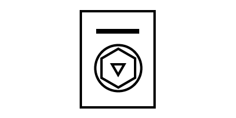
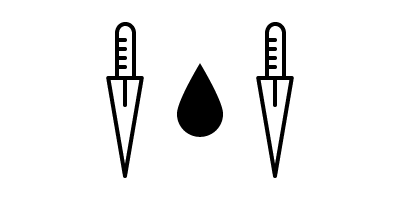

Acquire your very own demon underling with A.D.A.Ms patented Summon Totem™ technology in three simple steps.
Input the name of your desired Demon
Generate and print your unique Summon Totem™
Place your Summon Totem™ on any regulation size occult alter and provide a sacrifice
Acceptable sacrifices include chickens, goats, children, cats, & OAPs
Demon Name